id="js_content" style="">In China，有很多禁忌，有些人、有些事你都不能提。
尤其是Politics，虽然从小学到老，但是你不能对它品头论足。
“既然不让我们了解，那就是有猫腻和阴谋”。
这种神秘某种程度上造就了谣言市场和阴谋论思维。
因此，纪录片《大同》显得弥足珍贵。
它让我们有机会可以最近距离地了解一个市长的日常和官场百态。
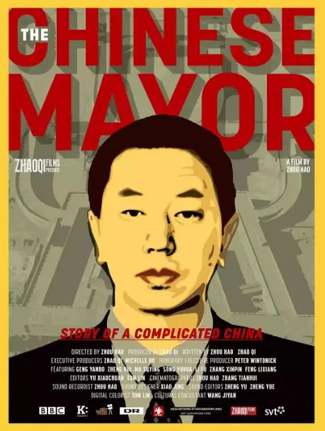
因为一些原因，纪录片不能让所有东西100%呈现在观众面前。
即便如此，这部纪录片的尺度绝对要大到你要猫在被窝里偷看的地步。
所以大虾也只能点到为止，为了介绍这部作品，文中也会出现很多“错别字”，希望大家理解。
纪录片不仅涉及敏感的拆千问题、方@民、豆夫扎工程，还有死缠烂打的钉子户和刁民。
上到领导，下到普通老百姓，时不时会飞出几句大实话，看的时候，都得注意身后有没有人在偷看着你。
有网友评价：
有工夫追55集反腐剧不如花一个半小时看完这部纪录片！
本片大获好评，拿下了当年金马奖最佳纪录片，豆瓣评分高达9.2。
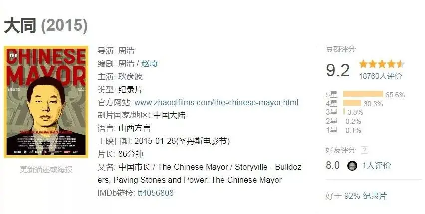
-01- 市长
2008年2月，大同。
50岁的耿yanbo任大同市委副书记、副市长、代市长。
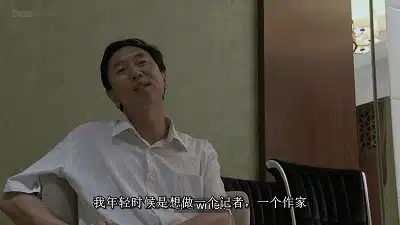
可以说他是掉入了一个大坑。
当时的大同不仅经济单一低糜，环境污染也是相当严重。
虽是一个省辖市，但像是一个小县城。
耿市长将如何解决这样的难题？
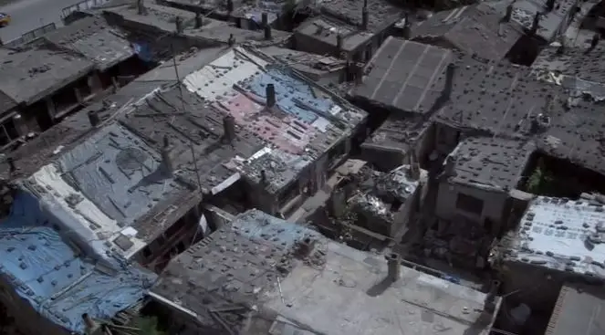
也许像以往的市长一样规规矩矩地做点事，再搞几个征集工程，然后调走是最保险的做法。
可他来了以后，却让死气沉沉的大同城动了起来。
他认为大同的魂不是它的煤炭，而是它的文化和历史。
人们去罗马、去巴黎，不是因为他们的GDP高才去，而是因他们的雕塑、绘画等人文艺术才慕名而去。
因此，耿市长要将大同整改成文化古城，既可以树立城市品牌，又可以发展旅游业推进大同产业多元化，从而减少环境污染。
此前，他在榆次任职时打造的王家大院就是很成功的案例，他笃信这也是大同的唯一出路。
为此，耿市长开始大规模“拆旧城建古城”，拆千工程斥资百亿，波及近两万人，“耿拆拆”也因此得名。
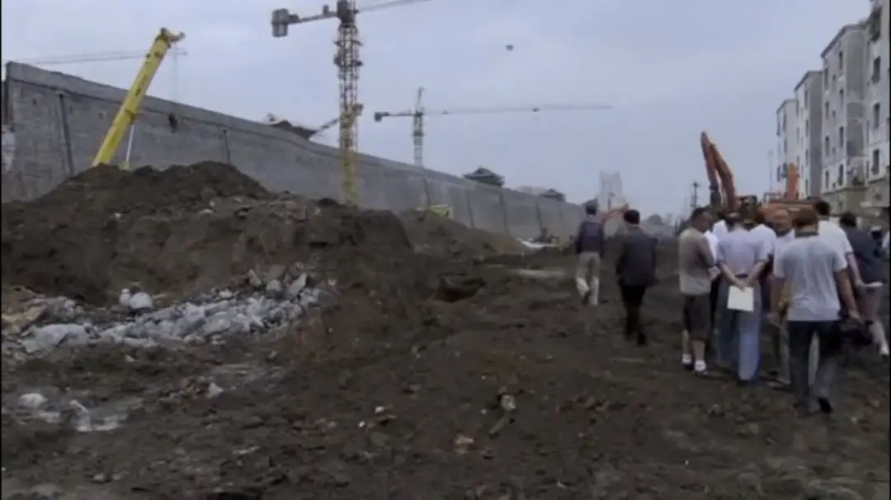
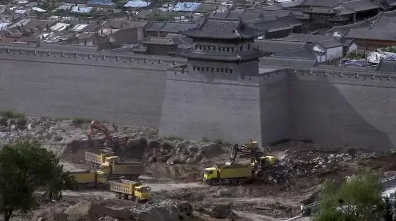
为了工作，耿市长日理万机、宵衣旰食，他经常跑到一线工地，亲抓工程进度和质量。
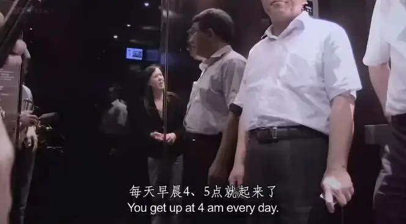
面对不良开发商，耿市长当场爆粗话大骂。
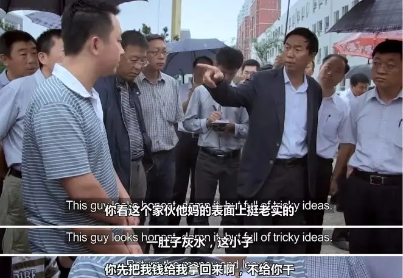
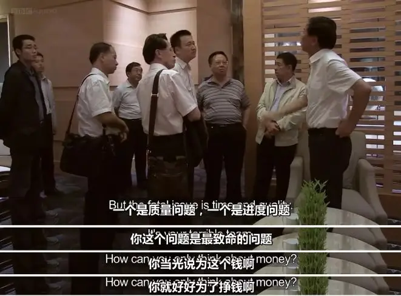
面对不坐位官员，他在会上要求对方赶紧回去写辞职报告。
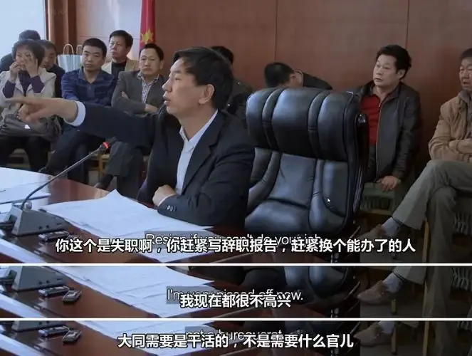
耿市长说话慢条斯理甚至听上去略带疲惫，但是手段之强硬远近闻名，不管赞不赞同他的做法，大家都知道耿市长是一个实干家。
2012年，周浩拍这个片子的时候，他问耿市长，为什么不可以怀柔一些。
耿市长冷笑地说：
我还有几年？
我今年已经已经55岁了，也就（还剩下）三五年；我哪里也不想去了，就想留在大同。
把这里的老百姓拆签安置好，看着这里的文化、产业、城市（把它）做一个品牌（立）起来，我就感到我这一生中……人生没有遗憾了。
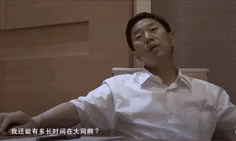
他知道大同只有这次机会了，抓住了就能上去，抓不住，历史不会再给大同另一次机会。
这不是盲目的自信，而是经验之谈。
耿市长一辈子在官场摸爬滚打，他深谙体质弊病和为官之道，他坦承体质之内，他自己什么也做不了，但他仍然选择了一条最难走的路。
没有一点情怀，没有对大同的爱，谁也不会做这个吃力不讨好的事。
因为，发展文化产业不是一个立竿见影的美差，而是一项需要深耕细作、着眼未来的大事。
这个事，不是上面交给他的任务，也不是周围的需要，而是这位五十多岁老人最后的理想。
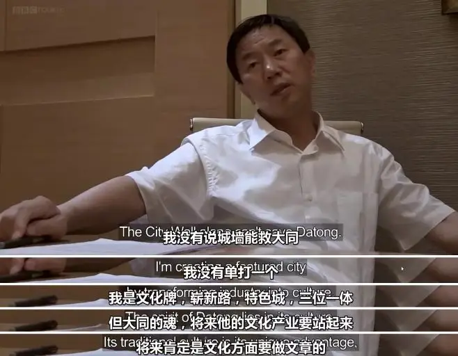
为此，晚上十点以后回家，早上四五点起床，睡不着就吃安定药，耿市长总是在一种危机感中争分夺秒。
可是，就像他经常挂在口边的话：铁打的衙门，流水的官。
2012年，没有任何风声和准备，上面来了一纸调令，耿市长不得不挥泪离别大同。
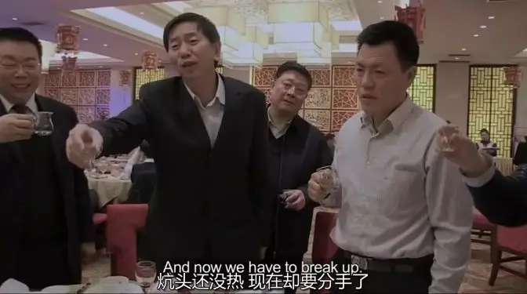
离别时，他的同事对他依依不舍，一位领导更是愤懑难忍，放了几句大实话。
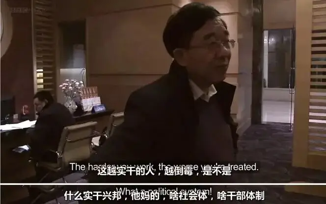
△丰lixiang，2014年因严重危机被查
大同人民更是拉横幅要挽留耿市长，这种场景在如今实属罕见。
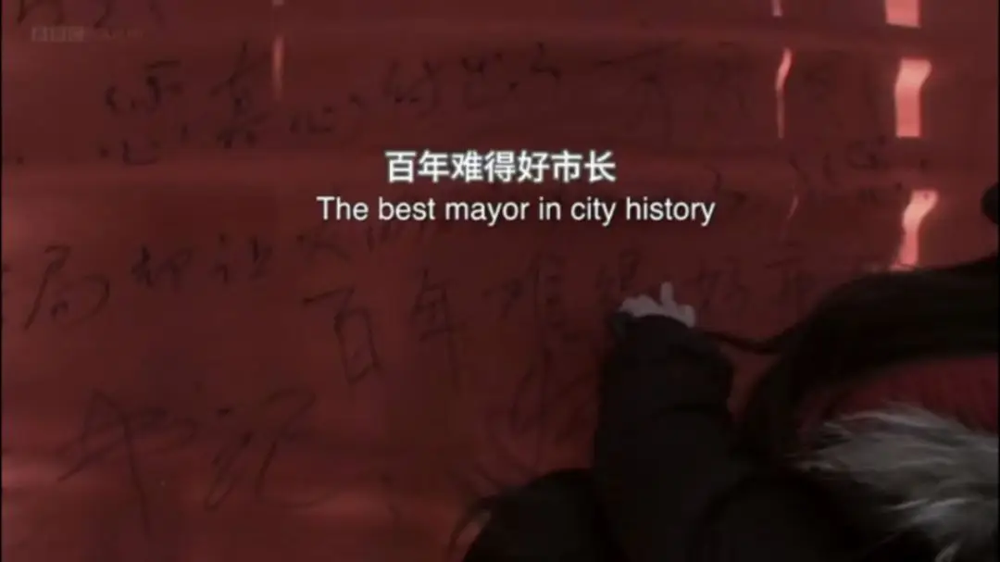
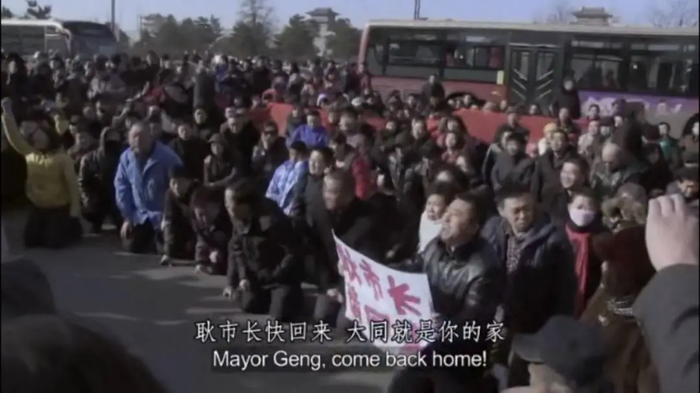
△又跪下来了
而耿市长规划的很多项目也因他的离开而中断。
今天，煤炭行业如此不景气，大同的旅游业不仅起到了输血功能，还有效地遏制了大同的污染。
大同蓝、宽宽的街道、六道高速公路、美丽的古城、博物馆等不仅给了大同很好的市容，当地人也日益从中享受到了实实在在的益处，这不得不归功于当时耿市长的远见和实干。
如今，你如果去问当地人对于耿市长的看法，大多都是非常感激的，一位大同人说：
如果你不感激耿市长，要么是你的财路被堵了，要么就是没良心
毕竟，如今的环境下，最大的腐背不是贪无，而是行政不坐位，人民不是瞎子。
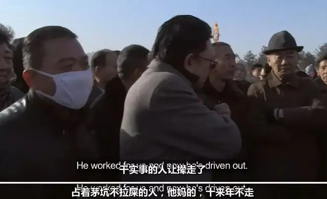
-02- 百态
要近两万人拆千，光是想一想，就知道这不是个容易事。
动员、做思想工作、抓好安置工作，这些就是做的再好，一牵扯到房子问题总是民乐四起。
人性的贪婪、粗暴执伐、历史遗留问题都在其中集中爆发。
有人拿了一套安智房，还想再多要一套，于是一大早便将自己残疾的母亲丢在耿市长的小区门口。
市长一出来，便迎上去哭冤，说一家人都是残疾，现在安排的五楼爬不上去，想再要一套低层。
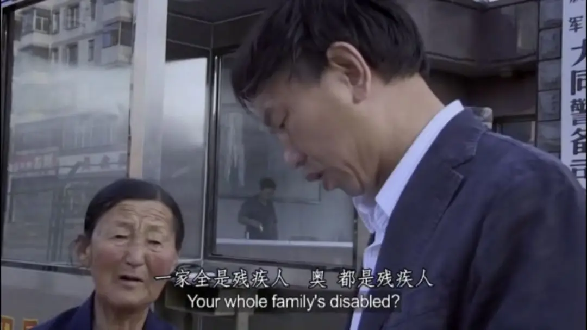
还有一户人家，因为自己的房子是没有产证的自建房，按规定没有办法安排安智房，这让他们觉得非常不公平，誓要与房子共存亡。
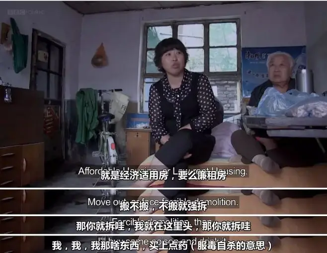
面对这些棘手的问题，办事人员为了完成任务，甚至进行了暴利执罚和强菜。
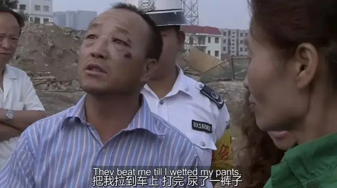
其中，一位女士自己多年前买了没有产证的经济适用房，并且花钱将房子装修的很漂亮。
对于这次拆千，不论是“未安置先拆千”的方式，还是价值不对等的补偿结果，都让她非常不满意。
她将耿市长看作是劳民伤财的秦始皇，她并不认同耿市长的做法。
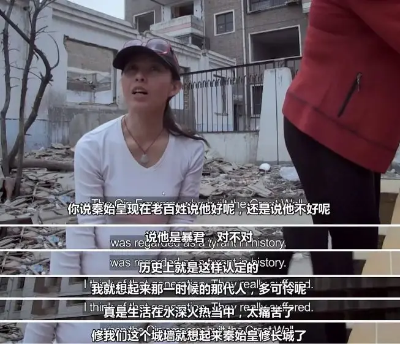
她据理力争，告诉耿市长，不能交易的经济适用房是征服遗留问题，征服非但没有起到监督作用，还让老百姓买单，这不合理。
耿市长无奈地告诉她：以前的糊涂事多着呢。
前人拍脑袋挖下的坑后面的怎么能填的完，耿市长虽已经竭尽全力，很多事上他依旧无能为力。
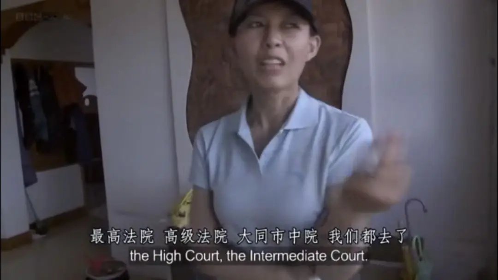
除了涉事其中的人，其他群众的反应也非常有意思。
有没有任何工民常识、不懂现代政府概念、分不清争当、国家的愚民。
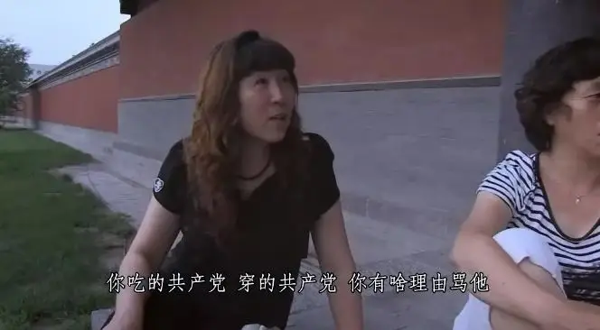
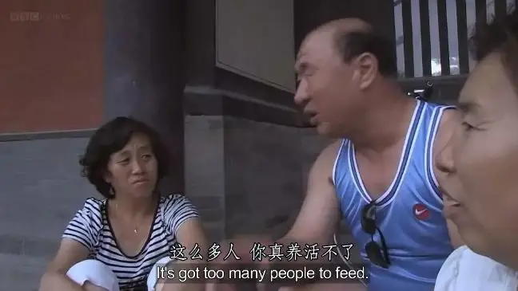
也有潜藏在民间的高手，比如说一身行为艺术家范的老马，竟知道文隔时来中国拍记录片的安东尼奥尼。
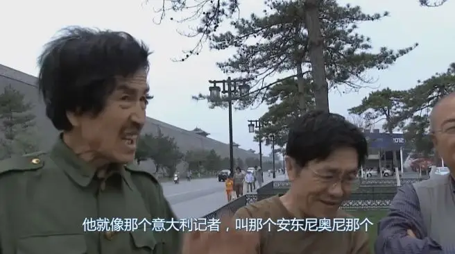
这百般姿态中既充满着无奈和绝望，又孕育着希望和明天。
导演周浩说：
这个国家存在无数的发展变化、复杂因素和人际阶层，充满各种诉求和需要。视角千变万化，不可能一概而论。
现在是时候了，让我们以工民的身份，从多元的角度来理解中国，理解它的保守与进步、个人与集体、政府与民众、现在与未来。
的确，这部片子带来的最大价值就是，它不想做到“告诉你”，只想做到“让你看到”。
不是去揭黑和攻击，而是去展现。
这种“无立场”的客观记录真的非常珍贵。
导演周浩和所有观众都要感谢耿市长。
在纪录片中他不是一本正经的官员，没有一味地进行冠冕堂皇的发言，也没有故作表演。
他允许周浩跟拍自己近一年的时间，以至于连他自己都忘记了周浩的存在。
他是一个真实的人物，有自己的理想、情感、困境和自负，甚至，他不惮于暴露自身的成败。
这样的气魄让人佩服！
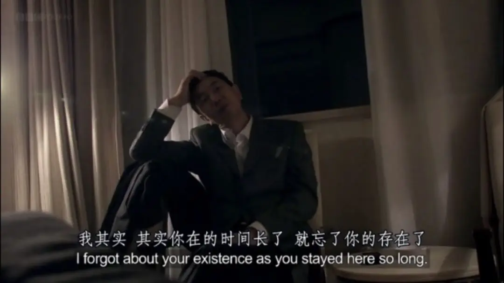
-03- 法治
这部作品很让人深思，我们不评判也没有资格评判耿市长的功过。
但是我们在其中确实看到了一些古老的影子，人民像过去的老百姓一样有着强烈的父母官情节，期盼好官胜过于期盼好的制度。
耿市长在体智内虽实属难得，但是他的身上仍然有着很威权的一面。
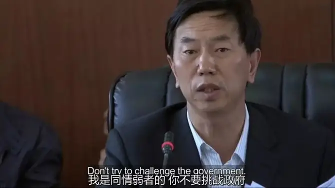
事事都管、事事亲力亲为、背书办公等都充满了人治的味道，整座城的未来命系一人未必是好事。
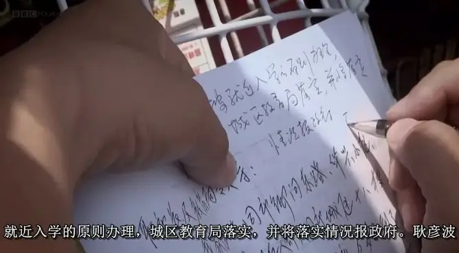
总之，普通人缺乏工民意识，为官者缺乏法治精神，这是我们的现实。
我们离现代政治文明的距离究竟在哪里？
艾略特曾说，世界上绝大多的邪恶都是人们心怀善意所做的（Most of the evil in this world is done by people with good intentions.）
乍看之下，这句话很让人难以理解，既然人们是心存美好去做事，那又怎么会事得其反呢。
可是，历史确确实实是这样的，希特勒上台时所宣传的在当时的德国人来看确实很正义，陈胜吴广起义时也确实是为了推翻暴政。
可是当他们登上权立高峰时，都不可避免地变成了另一个恶魔。

绝对的权立意味着绝对的幅败。
艾略特的意思其实是说，人的理性早已经堕落，要么你笃信的善根本就不是真正的善，要么你根本没有能力坚守你宣扬的东西。
总之，人性是堕落的，是不靠谱的，禁不起任何试探和诱惑。
基督教的原罪观为西方人提供了如此深入人心的人性常识，所以他们再此基础上发展出了纷权制衡、陪审制度、新闻独力等现代文明。
他们设计制度，就是要规避人性的恶，就是要防止人类堕落的理性将世界带向地狱。
因此，法治意识才会深入人心，否者，就是你把别人的一整套理论原封不动地拿过来，也毫无意义。
在绝对傲慢的权立面前，那只是毫无约束力的一纸空文。
我们的文化提供不了西方那样的精神资源和清楚明了的人性共识，反倒是造成了皇帝“佳丽万千”的傲慢而百姓却“守节如玉”的奴性。
没有正确的信仰，所以对人性没有清楚的认识，所以我们的法治没有根基。
没有正确的信仰，所以权立没有敬畏和底线，所以人民始终没有追求平等的尊严和勇气。
过去，我们很粗暴地将别人发展几百年的成果直接拿过来用，却始终不得其法。
如今，我们必须要回到别人的精神源头，要从信仰上踏实建立，这样我们才会有真正的明天。

这里没有挑逗你眼目情欲的小鲜肉
也没有挑动你肉体情欲的段子
更没有膨胀你今生骄傲的鸡血
我们只在乎那些最质朴真诚的作品
在那里我们才能恢复真正的想象力
我们也坚信这才是我们真正需要的

ID:Six_hundred_hits
长按二维码，一键关注
【六百击】
-END-
电影评论
尽情分享朋友圈

苹果打赏通道
小提示：文末广告是腾讯配送广告，内容与本号无关，但您的每次点击（无需反复点）都会给平台带来几毛收益，欢迎您点击支持六百击。